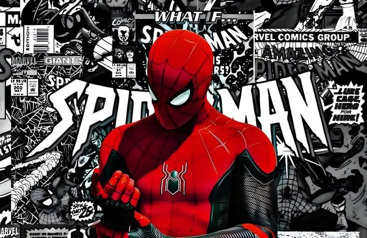

Task 1: Responsive 3-Section Layout Using Flexbox
On desktop, these boxes appear in one row. On mobile, they stack in one column.
HTML
HTML gives structure to a web page using headings, paragraphs, images and links.
CSS
CSS is used to add colours, spacing, fonts and responsive layouts.
JavaScript
JavaScript makes a website interactive and adds dynamic behaviour.
Task 2: Simple Photo Gallery Using Grid
A responsive photo gallery created using CSS Grid.
